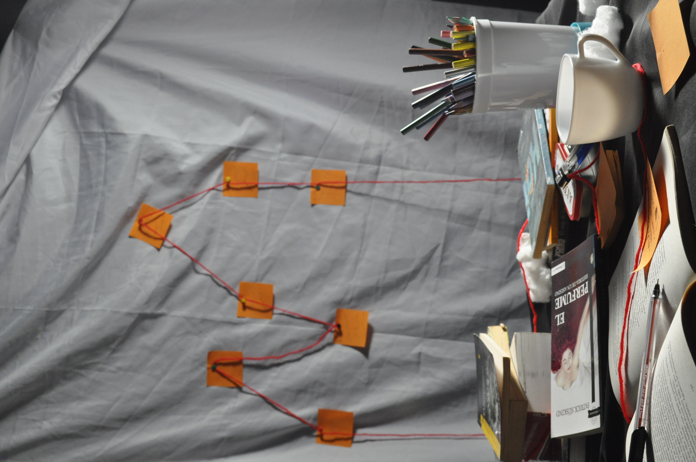
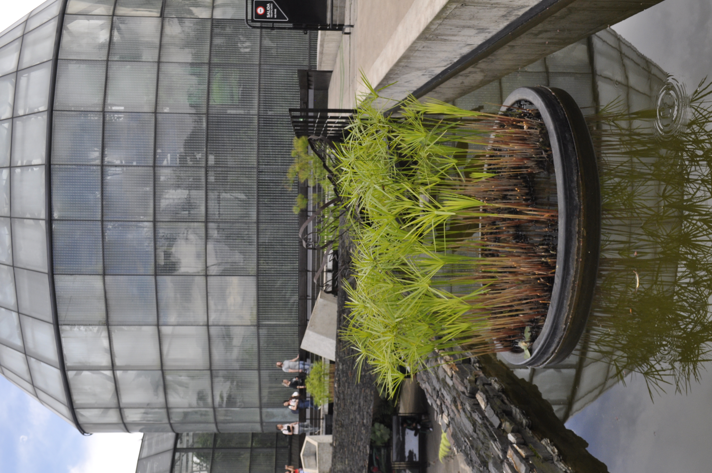
La fotografía se ha convertido en una forma de expresar mi visión y mi manera de observar el mundo. A través de cada imagen intento capturar no solo un momento, sino también una emoción, una atmósfera y una historia. Me gusta trabajar con iluminación, colores y composición para crear fotografías que transmitan personalidad y fuerza visual.
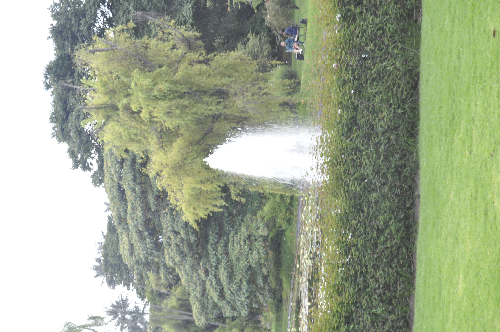
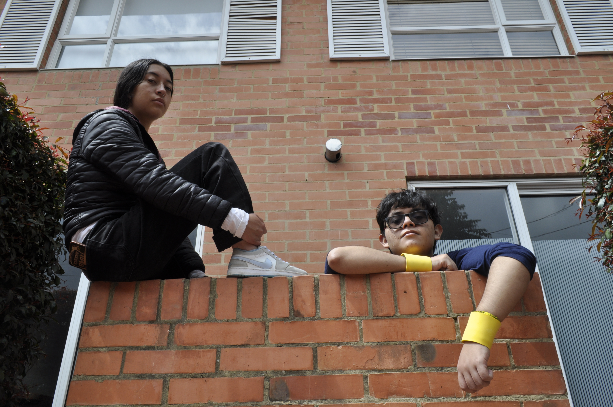
Con el tiempo he aprendido que una buena fotografía no depende únicamente de la cámara, sino también de la creatividad, la paciencia y la capacidad de encontrar detalles que muchas veces pasan desapercibidos. Cada sesión y cada foto representan una oportunidad para mejorar y experimentar con nuevas ideas.
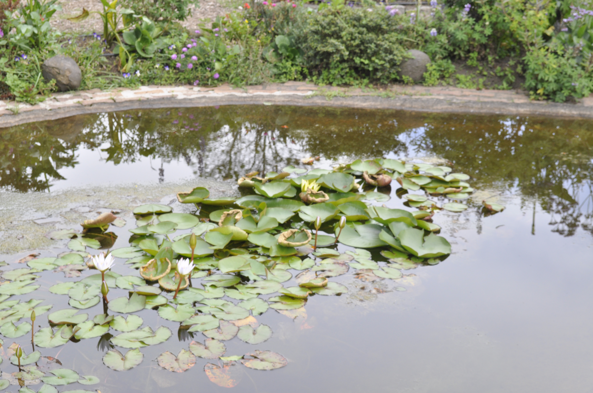
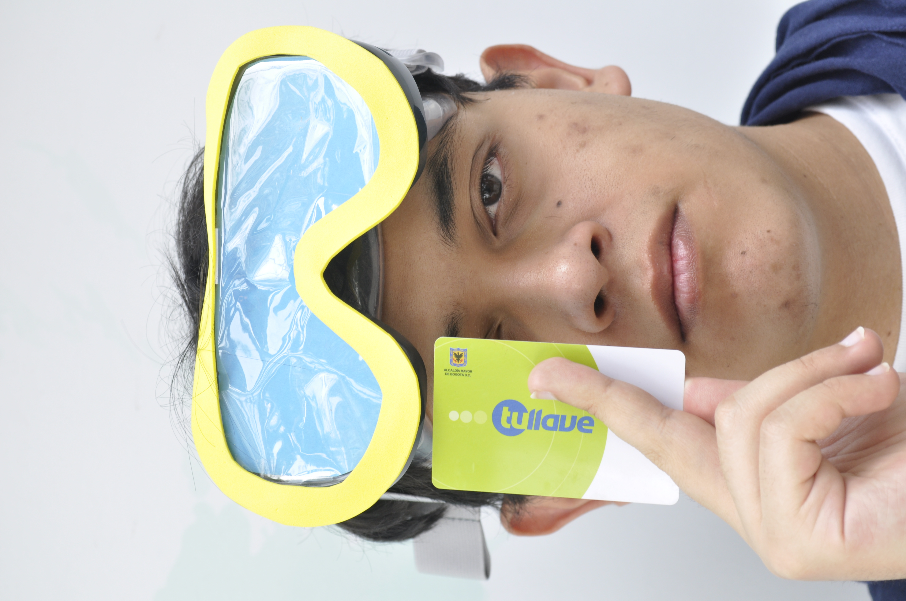
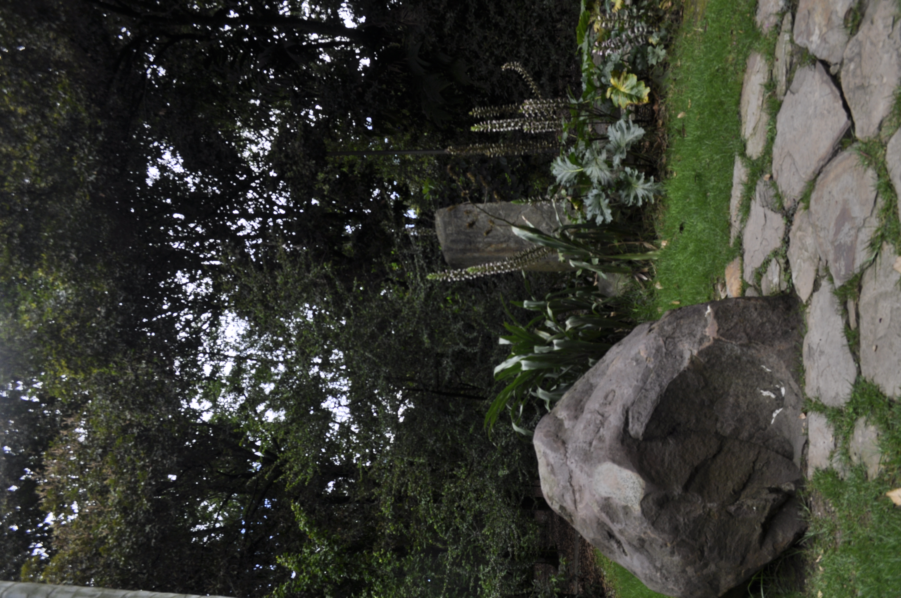
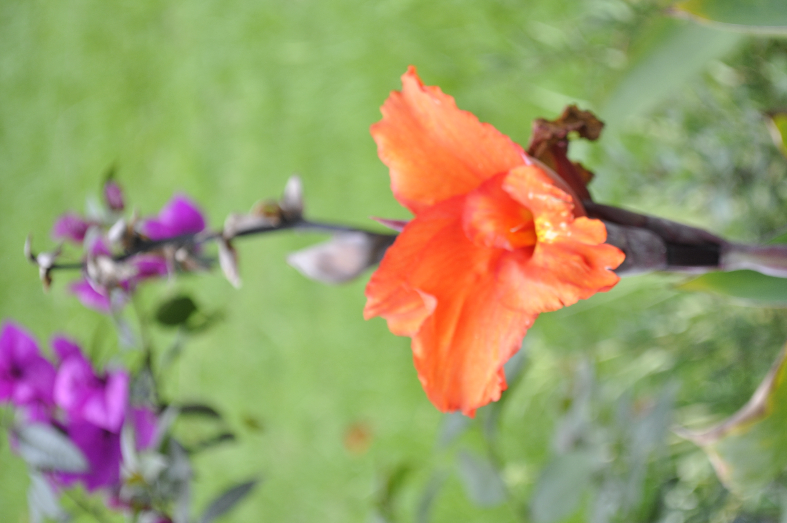
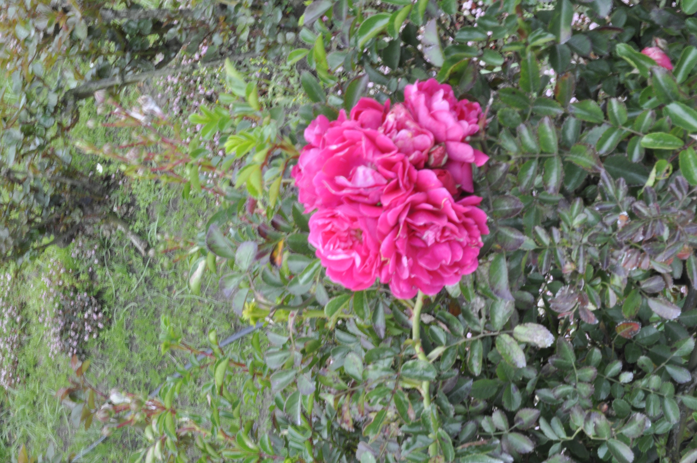
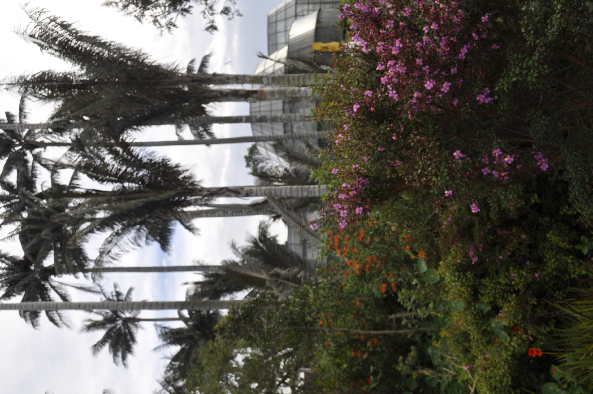

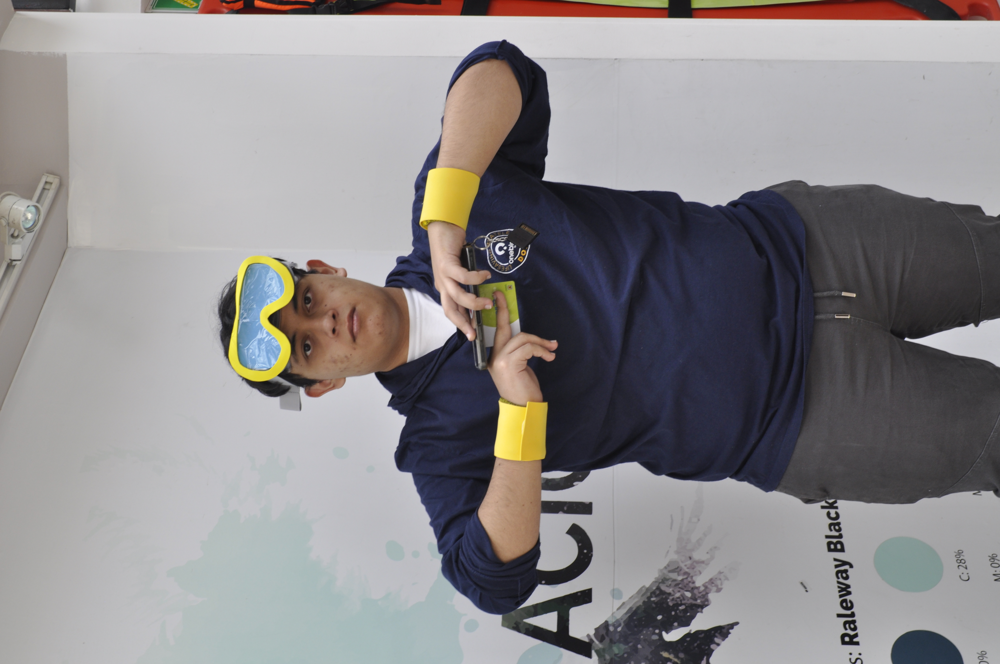
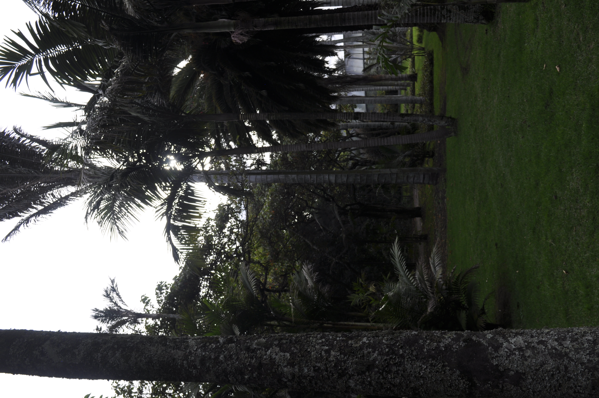
Mi recorrido en la fotografía comenzó como una simple curiosidad, pero poco a poco se convirtió en una pasión. A través de la práctica, los errores y la experimentación, fui aprendiendo a entender mejor la luz, los ángulos y la composición. Cada fotografía que tomo representa una parte de mi crecimiento y de mi manera de ver el mundo.
Empecé sin tener mucha experiencia en fotografía, aprendiendo poco a poco desde lo más básico. Con práctica y dedicación descubrí cómo usar la cámara para transformar ideas simples en imágenes con impacto visual. Hoy veo la fotografía no solo como una habilidad, sino como una forma de creatividad y expresión personal.
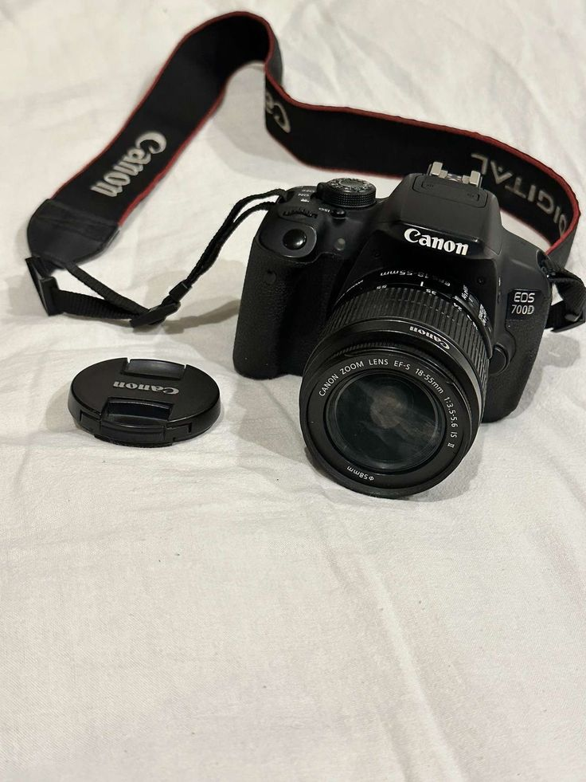